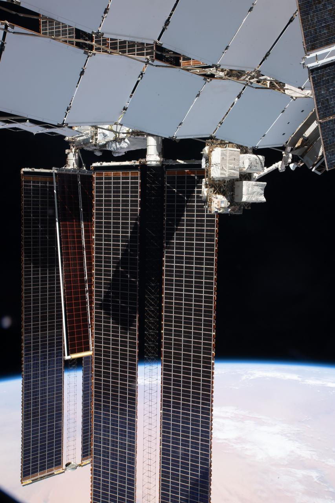
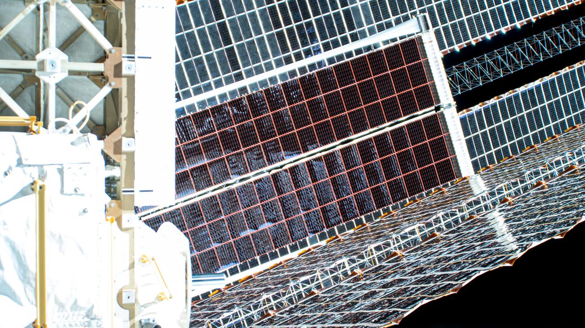

Energetyka kosmiczna i fotowoltaika orbitalna
Notatka raportu "Orbitalne centra danych". Kluczowe źródła: źródło 1, źródło 2.
W skrócie
Energia to fundament każdej tezy o orbitalnych centrach danych - i jednocześnie miejsce, gdzie najłatwiej o błąd liczbowy, który zmienia opłacalność o rząd wielkości. Na orbicie Słońce świeci niemal bez przerwy i znacznie mocniej niż na Ziemi (stała słoneczna 1361 W/m2 wobec ~170-200 W/m2 średniej naziemnej), a kosmiczne ogniwa GaAs mają ~30% sprawności wobec ~22% krzemu naziemnego - więc panel orbitalny produkuje z metra kwadratowego wielokrotnie więcej energii niż naziemny. Klucz dla inwestora: jeśli ktoś liczy powierzchnię i masę paneli "po naziemnemu" (np. ~20 W/kg, ~200 W/m2), otrzyma wynik 4-6x zawyżony i fałszywie uzna projekt za absurd. Realne nowoczesne macierze rolowane (ROSA) deklarują 100-120 W/kg, choć cały statek schodzi do ~24-41 kg/kW po doliczeniu baterii na zaćmienia, busów wysokonapięciowych i radiatorów. Trzecia oś to "energia jako usługa": startupy power beamingu (Star Catcher, Cowboy Space/Aetherflux, Space Solar, Virtus Solis) ścigają się o przesył wiązki mocy, gdzie sprawność całkowita to dziś wąskie gardło (~13% w modelu NASA, ~5% w obecnych systemach naziemnych) i decyduje o tym, kto na tym zarobi, a kto przepali kapitał.
Spółki powiązane
Notowane spółki produkujące podzespoły/technologie związane z tym tematem. Pełne omówienie: spółki, dla których nisza to >=33% przychodów; skrótowe: zdywersyfikowane konglomeraty. Zob. też Słownik i Spółki z ekspozycją na giełdy europejskie.
Producenci kluczowi (>=33% przychodów z niszy - omówienie pełne):
- Rocket Lab Corporation (RKLB) - Launch (Electron/Neutron) + Space Systems: bus, ogniwa SolAero, komponenty
- Redwire Corporation (RDW) - Panele ROSA, struktury rozkładane, montaż on-orbit, radiatory Q-Rad
Pozostali dominujący gracze (nisza to ułamek przychodów - omówienie skrótowe):
- Northrop Grumman Corporation (NOC) - Serwis GEO (MEV/MRV), busy, radiatory, ogniwa
- Airbus SE (AIR) 🇪🇺 - PV (Sparkwing), optyka (Tesat), busy, serwis (EU)
Powiązane wątki
Mapa powiązań tematycznych - jak ten wątek łączy się z resztą raportu.
- Fizyka orbitalna - insolacja i cykle eklips zależą od geometrii orbity
- Chłodzenie - bilans mocy zamyka się dopiero z bilansem cieplnym (radiatory)
- Ekonomika i TCO - koszt i masa systemu energetycznego wchodzą wprost do TCO
- Naziemny bottleneck - przewaga energetyczna orbity ma sens wobec niedoboru mocy na Ziemi
- Środowisko - carbon intensity solar orbital vs naziemny miks energetyczny
Stała słoneczna i przewaga insolacji orbitalnej
Stała słoneczna - czyli moc promieniowania Słońca padająca na metr kwadratowy powierzchni prostopadłej, mierzona ponad atmosferą - wynosi według aktualnych pomiarów NASA 1361,6 ± 0,3 W/m2 (instrument TSIS-1, minimum słoneczne 2019) źródło, zaokrąglane też do 1361 W/m2 źródło. Na Ziemi w grę wchodzą noc, chmury, kąt padania i straty atmosferyczne, więc średnia roczna insolacja na powierzchni poziomej to zaledwie ~170 W/m2 źródło, a nawet w dobrych lokalizacjach ~200 W/m2 w Australii, 185 W/m2 w USA i tylko 105 W/m2 w Wielkiej Brytanii źródło. Stosunek tych wartości to ~6,8-8x na korzyść orbity proxy obliczeniowy autora raportu. Implikacja dla inwestora: każdy metr kwadratowy panela na orbicie pracuje "za kilka" naziemnych - to właśnie ta przewaga ma rekompensować horrendalne koszty wyniesienia masy. Każda analiza, która tego nie uwzględni i liczy panele orbitalne naziemną insolacją, jest z gruntu wadliwa.
xychart-beta
title "Insolacja: kosmos vs Ziemia (W/m2)"
x-axis ["Kosmos", "Australia", "USA", "Srednia", "UK"]
y-axis "W/m2" 0 --> 1400
bar [1361, 200, 185, 170, 105]
Rys. 18 - Stała słoneczna na orbicie wobec naziemnej insolacji w wybranych lokalizacjach; przewaga orbity to rząd 7-8x. Dane: NASA GSFC; World Energy Council 2013.
Sprawność ogniw kosmicznych vs krzem naziemny
W kosmosie nie używa się tanich modułów krzemowych, lecz drogich, ale sprawnych ogniw wielozłączowych z arsenku galu (GaAs) - tzw. triple-junction, gdzie trzy warstwy półprzewodnika łapią różne zakresy widma. Producenci podają ~30% sprawności na początku życia (BOL, beginning of life) w standardowych warunkach kosmicznych AM0 CAVU Aerospace, a często >30% satsearch/Kingsoon. Ogniwa XTJ Prime od Spectrolab (Boeing) mają 30,7% i zasilają macierze iROSA stacji ISS Redwire IR. Dla wymagających misji (ESA JUICE) sprawność sięga 33,5% przy BOL E3S/ESPC 2017, a typowe ogniwa CIC podają 32% Mindway. Dla porównania naziemny krzem krystaliczny ma średnią ważoną sprawność 21,6% (Q4-2023), a najlepsze moduły 23,3% Fraunhofer ISE. Implikacja: ogniwo kosmiczne łapie ~30% z 1361 W/m2, naziemne ~22% z ~200 W/m2 - łączna przewaga energetyczna z metra kwadratowego sięga rzędu ~9-10x, co bezpośrednio przekłada się na mniejszą wymaganą powierzchnię (a więc masę i koszt wyniesienia).
xychart-beta
title "Sprawnosc ogniw: GaAs kosmos vs krzem (%)"
x-axis ["JUICE", "CIC", "XTJ Prime", "GaAs BOL", "Si best", "Si avg"]
y-axis "%" 0 --> 40
bar [33.5, 32, 30.7, 30, 23.3, 21.6]
Rys. 19 - Sprawność kosmicznych ogniw GaAs (triple-junction, AM0/BOL) wobec krzemu naziemnego. Dane: E3S/ESPC 2017; Mindway; Redwire IR; CAVU; Fraunhofer ISE.
Gęstość masowa: W/kg, masa/m2 i przeliczenie "200 MW"
Najważniejszy parametr dla budżetu masy to moc właściwa (W/kg) - ile watów daje kilogram konstrukcji. Tu kryje się przepaść między technologiami. Naziemny moduł krzemowy "schudł" z ~8,5 W/kg na początku lat 2000 do 23,6 W/kg dziś pv-magazine. Kosmiczne macierze rolowane (ROSA - Roll-Out Solar Array, elastyczne "rolety" PV rozwijane na orbicie) Redwire deklarują 100-120 W/kg na poziomie samego "koca" (blanket) Redwire flysheet, gęstość pakowania ~40 kW/m3 Redwire flysheet i pracę w zakresie napięć od 12 V do >300 V Redwire flysheet.
Realna wartość zmierzona dla iROSA na ISS jest jednak niższa: każdy moduł waży ~340 kg, rozkłada się do 6 m x 19,2 m i osiąga 75,3 W/kg ScienceDirect/Yan 2025; to ~115,2 m2 powierzchni proxy z wymiarów, czyli masa/m2 ≈ 2,95 kg/m2 (proxy: 340 kg / 115,2 m2). Każda macierz iROSA dostarcza ponad 28 kW (w innej wersji Redwire ">20 kW") Redwire IR. Skrajnie lekkie ogniwa cienkowarstwowe (CdTe na poliimidzie) ważą poniżej 0,7 kg/m2 przy ~10% sprawności i ~2 kW na węzeł arXiv 2512.09044. Implikacja: różnica między 23,6 W/kg (krzem naziemny) a 75-120 W/kg (kosmos) to mnożnik 3-5x na masie - kluczowy, bo wyniesienie masy to gros kosztu.

Rys. 20 - Energetyka: iss065e125924. Źródło: NASA, licencja: public domain.
#grafika #energetyka-kosmiczna-i-fotowoltaika-orbitalna #panele-sloneczne #ROSA

Rys. 21 - Energetyka: iss065e144542. Źródło: NASA, licencja: public domain.
#grafika #energetyka-kosmiczna-i-fotowoltaika-orbitalna #panele-sloneczne #ROSA
xychart-beta
title "Moc wlasciwa paneli (W/kg)"
x-axis ["Si naziemny", "iROSA real", "ROSA blanket"]
y-axis "W/kg" 0 --> 130
bar [23.6, 75.3, 120]
Rys. 22 - Moc właściwa: krzem naziemny wobec kosmicznych macierzy rolowanych (zmierzone iROSA i deklarowany blanket ROSA); mnożnik 3-5x na masie. Dane: pv-magazine; ScienceDirect/Yan 2025; Redwire flysheet.
Tezę z polskiego artykułu sceptycznego ("200 MW = 80 ha = 8 tys. ton") da się przeliczyć tylko proxy, bo oryginał nie został zlokalizowany publicznie brak dostępnego oryginału - liczby z instrukcji. Kontekst medialny: Thales Alenia Space mówi o konstelacji 13 satelitów składanych w farmę 200 x 80 m dającą ~10 MW mocy obliczeniowej Polskie Radio 24/PAP, a próg "sensowności" dla narastającego popytu AI to ~200 MW Polskie Radio 24/PAP. Proxy powierzchni: przy 1361 W/m2 i 30% sprawności 200 MW wymaga ~490 tys. m2 ≈ 49 ha; po stratach temperaturowych/kątowych (~25%) ~65 ha; po marginie eklipsowym ~38% ~90 ha - wartość 80 ha mieści się w tym zakresie proxy obliczeniowy. Proxy masy: same panele ROSA przy 100-120 W/kg to ~1,7-2,0 tys. t dla 200 MW, ale modele całych statków ODC (Star Catcher ~41 kg/kW -> ~8,2 tys. t; McCalip ~30 kg/kW -> ~6 tys. t) wskazują, że 8 tys. ton to wiarygodna estymata masy całkowitej na orbitę, a nie tylko paneli proxy obliczeniowy. Dla porównania McCalip podaje dla 1 GW orbital solar: 29,4 mln kg masy do LEO McCalip, 51,10 USD/W kosztu McCalip i LCOE 1167 USD/MWh McCalip. Implikacja: liczby "80 ha / 8 tys. ton" same w sobie nie są niedorzeczne - błędem jest dopiero ich wyprowadzanie z założeń naziemnych (patrz Kontrowersje).
Degradacja PV od promieniowania: BOL vs EOL
Na orbicie ogniwa starzeją się szybciej niż na Ziemi, bo bombardują je naładowane cząstki (pasy Van Allena, wiatr słoneczny). Producent GaAs podaje, że po dawce 1x10^15 e/cm2 retencja mocy spada do 0,84 CAVU, prądu do 0,93 CAVU i napięcia do 0,90 CAVU (BOL - początek życia, EOL - koniec życia). Tempa rocznej degradacji rozjeżdżają się mocno w literaturze: 2,66%/rok dla LEO ResearchGate, 0,275%/rok dla GaAs i 0,375%/rok dla krzemu SJSU/Raman, 0,92%/rok (87% przez 15 lat) core.ac.uk, a analityk branżowy szacuje 200-300 punktów bazowych (2-3%) rocznie zależnie od orbity Per Aspera. Sprawność JUICE startuje od 33,5% BOL E3S, a jednej liczby EOL źródło nie podaje - jedynie mechanizm, że spadek mocy maksymalnej Pmp jest silniejszy niż prądu Isc i napięcia Voc E3S. Uniwersalnej wartości degradacji NIE UJAWNIONO - zależy od orbity, osłony (coverglass) i technologii; w LEO typowo 1-3%/rok proxy z literatury. Implikacja: degradacja bezpośrednio skraca żywotność farmy i podnosi LCOE - inwestor musi pytać o konkretną orbitę i osłonę, bo różnica między 0,28% a 2,66% rocznie to różnica między 15-letnim a kilkuletnim aktywem.
Bilans mocy, magazynowanie na zaćmienia i busy wysokonapięciowe
W LEO satelita co ~90 minut wpada w cień Ziemi - ciemność trwa ~25-35% orbity Per Aspera, czyli ~30 min na okrążenie Per Aspera; ISS używa dużych baterii na swoją ~35-minutową "noc" Per Aspera. W ujęciu dobowym obiekt w LEO ma światło ~60% czasu SemiAnalysis, a orbita synchroniczna ze Słońcem (SSO) ogranicza zaćmienie do ~35 min/dobę SemiAnalysis. NASA podaje dla LEO głębokość rozładowania baterii (DOD) ~30-40% NASA NTRS, cykl rozładowania 30/36 min NASA NTRS i ładowania 55/60 min NASA NTRS. Baterie litowe klasy kosmicznej magazynują ~100 Wh/kg Per Aspera - to ciężki, drogi balast. Elegancki obejście: orbita "świtu-zmierzchu" (DDSS) na ~1600 km i nachyleniu 102,5 stopnia eliminuje potrzebę magazynowania energii arXiv 2512.09044, redukując baterie do zera i unikając cykli termicznych arXiv 2512.09044. Implikacja: każdy procent czasu w cieniu trzeba "przykryć" bateriami, które dorzucają ~10 kg/kW masy (patrz niżej) - dobór orbity to dźwignia kosztowa, a nie detal inżynierski.
Drugie wąskie gardło to elektryka wysokonapięciowa w próżni. Centrum danych potrzebuje setek kW-MW, co wymusza wysokie napięcia busa (300-1000 V) NASA GRC, ale w plazmie orbitalnej grozi to łukowaniem (arcing) - wyładowaniami niszczącymi panele. Już od wprowadzenia systemów 100 V w późnych latach 80. obserwowano łuki uszkadzające satelity NASA GRC; progi wyzwolenia łuku to -100 do -250 V NASA GRC, łuki obserwowano nawet przy -75 V NASA GRC, a łuki podtrzymywane mogą wystąpić już od 40 V przy 1 A NASA GRC. Z drugiej strony pojedyncza duża szyba osłonowa (coverglass) odgradzająca panel od plazmy pozwala wytrzymać nawet -1100 V NASA GRC. Implikacja: skalowanie napięcia to ostry kompromis - wyższe napięcie zmniejsza straty i masę kabli, ale podnosi ryzyko awarii łukowej, co jest realnym ryzykiem niezawodności (i ubezpieczeniowym) dla inwestora.
Power beaming i "energia jako usługa": kto walczy o ten rynek
Najgorętszy segment to firmy oferujące energię jako usługę - zamiast każdy satelita budował własne wielkie panele, dostawca "doświetla" je wiązką. Star Catcher buduje orbitalną sieć energetyczną bezprzewodowo przesyłającą moc do istniejących paneli, dając im do 10x więcej mocy Star Catcher. Przykład: 20 MW ODC łatwo osiągalne w konfiguracji 81 satelitów po ~250 kW każdy Star Catcher. Bez wiązki 250 kW wymagałoby 1100 m2 paneli na statek, a z 10x fluxem tylko 110 m2 Star Catcher. To redukuje masę: 2x flux obniża masę ODC o ponad 50% Star Catcher, a 10x flux schodzi do ~37% masy pierwotnej Star Catcher, co daje "do 3,5 centrum danych za cenę jednego" Star Catcher. Star Catcher modeluje PUE 1,3 Star Catcher, system termiczny ~2,5 kg/kW Star Catcher i mniejszą powierzchnię paneli redukującą ryzyko kolizji o 30-85% Star Catcher. Finansowo zebrali 65 mln USD Series A The Engineer (łącznie 88 mln USD) The Engineer, w 2025 dostarczyli ponad 1,1 kW mocy elektrycznej laserami do komercyjnych paneli na KSC pv-magazine-usa, podpisali 7 umów PPA SpaceQ i deklarują pipeline >3 mld USD rocznego przychodu powtarzalnego SpaceQ, z konstelacją na ~1000 mil pv-magazine-usa i adaptacyjnymi lustrami beamującymi do 50 satelitów naraz The Engineer. Bez wiązki gigawatowe centra danych wymagałyby >600 boisk piłkarskich paneli Star Catcher. Implikacja: jeśli power beaming zadziała w skali, radykalnie zmienia TCO - to opcja na "wygranego biorącego wszystko" lub na spalenie kapitału, jeśli sprawność wiązki rozczaruje.
Cowboy Space (dawniej Aetherflux, założona w 2024 przez współzałożyciela Robinhooda) zamknęła Series B na 275 mln USD przy wycenie post-money 2 mld USD TechCrunch, po wcześniejszych 80 mln USD TechCrunch (łącznie ~355 mln USD finansowania zewnętrznego) datagrom. Każdy satelita ma ważyć 20 000-25 000 kg i dawać 1 MW mocy dla niespełna 800 GPU TechCrunch, z pierwszym satelitą power beamingu jeszcze w 2026 Evertiq i własną rakietą przed końcem 2028 TechCrunch; pierwszy moduł centrum danych (projekt Galactic Brain) ma trafić na orbitę w I kwartale 2027 z użyciem laserów podczerwonych tech.wp.pl. Firma współpracuje z NVIDIA przy modułach Space-1 Vera Rubin Evertiq. Sprawność beamingu Cowboy Space NIE UJAWNIONA TechCrunch.
Brytyjski Space Solar celuje w przesył energii z kosmosu na Ziemię: pierwsza elektrownia 30 MW do 2030 dla Reykjavik Energy (Islandia), we współpracy z Transition Labs Space Solar, skalowanie do GW do 2036 Space Solar i 180 MW w 2033 SatelliteToday. System 30 MW ma kosztować ~400 mln USD SatelliteToday, przyszłe do 2,25 mld USD SatelliteToday. Demonstrator to 64 t NSS/OSA, zasili ~3000 domów NSS/OSA. Technologia przesyłu dopracowana przez 5 mln GBP badań Space Solar, a projekt CASSiDi trwał 18 mies. i kosztował 1,7 mln GBP (~2,26 mln USD) SatelliteToday; przesył wiązką radiową wysokiej częstotliwości, sprawność NIE UJAWNIONA Space Solar.
Virtus Solis (z Orbital Composites) stawia na modularne kafelki: heksagon 1,65 m Virtus Solis dający 1 kW na ziemię NextBigFuture, architektura skalowalna od 100 MW do 20 GW Virtus Solis, przesył RF 10 GHz Virtus Solis. Demo naziemne: 68 W przez 100 m za pomocą 6400 anten Virtus Solis. Finansowanie ~2 mln USD z ARPA-E Space Frontier, pilotaż 2027-2028 Space Frontier, pierwszy system operacyjny 2030 Space Frontier, cel ceny 30 USD/MWh Space Frontier, rektenna o średnicy 2 km Space Frontier. Demonstrator 100 kW (koszt 25 mln USD), z czego na ziemię dotrze tylko ~4 kW Engineering.com - co obnaża skalę strat przesyłu. Demo z Orbital Composites: ponad 1 kW beamingu do 2027, klasa MW do 2030 PayloadSpace. Implikacja inwestorska: fakt, że z 100 kW dociera 4 kW (~4%), pokazuje, że sprawność end-to-end to dziś główny hamulec ekonomii i wszelkie deklaracje 30 USD/MWh trzeba ważyć tym ryzykiem.
Sprawność przesyłu wiązki - benchmark i wpływ na TCO
Łańcuch strat jest długi. Model NASA SBSP rozkłada go: ogniwo 35% NASA SBSP, konwersja w kosmosie DC-DC 90% i DC-RF 70% NASA SBSP, emisja anteny 90% NASA SBSP, przejście atmosferyczne 98% NASA SBSP, zbieranie wiązki 95% NASA SBSP, rektenna 78% NASA SBSP, DC-DC na ziemi 90% NASA SBSP - co daje ~13% energii padającego Słońca trafiające do sieci NASA SBSP. Eksperyment orbitalny MAPLE: sprawność rektenny 40% względem mocy padającej na aperturę arXiv MAPLE, moc szczytowa 231 mW (ścianka) i 251 mW (czoło) arXiv MAPLE, częstotliwość 9,984 GHz arXiv MAPLE, wysokość 527 km arXiv MAPLE, strata wolnoprzestrzenna 167 dB arXiv MAPLE. Historyczny rekord: NASA Goldstone 1975 przesłała 30 kW z 82% sprawnością Sirotin Intelligence. Naziemne demonstracje: DARPA POWER 800 W na 8,6 km laserem Energy Solutions, US Army Scope-M 1,6 kW przy 95% sprawności na 1 km mikrofalą Energy Solutions, NTT/MHI 15% laserem na 1 km Energy Solutions. Realistyczny obraz: obecne systemy ~5% sprawności, do praktyki potrzeba ~20% Yahoo Tech. Sprawność space-to-space Star Catcher i Cowboy Space pozostają NIE UJAWNIONE Star Catcher.
pie showData
title Lancuch sprawnosci przesylu wiazki (NASA SBSP)
"Do sieci" : 13
"Straty" : 87
Rys. 23 - Udział energii padającego Słońca docierający do sieci po pełnym łańcuchu strat przesyłu wiązki w modelu NASA SBSP. Dane: NASA SBSP report 2024.
Wpływ na TCO widać w modelu NASA: koszt życia energii (LCOE) bazowo 0,61 USD/kWh (RD1) i 1,59 USD/kWh (RD2) NASA SBSP, gdzie wyniesienie to 71% (RD1) i 77% (RD2) kosztu NASA SBSP - bo trzeba 23 216 startów dla 5,9 mln kg (RD1) i 3960 dla 10 mln kg (RD2) NASA SBSP. Przy korzystnych założeniach (start 500 USD/kg, 50 mln USD/lot, 15 lat życia) LCOE spada do 0,03 USD/kWh (RD1) i 0,08 USD/kWh (RD2) NASA SBSP. Powierzchnia paneli to 11,5 km2 (RD1) i 19 km2 (RD2) NASA SBSP, emisyjność 26-40 gCO2eq/kWh NASA SBSP. Implikacja: ekonomia stoi i upada na koszcie wyniesienia - 20-krotny spread LCOE (0,03 vs 0,61 USD/kWh) zależy głównie od tego, czy starty potanieją tak, jak zakładają optymiści.
Kontrowersje
Główny błąd liczbowy artykułu sceptycznego: założenia naziemne czy orbitalne?
Oryginał polskiego artykułu sceptycznego nie został zlokalizowany publicznie, co uniemożliwia bezpośrednią weryfikację jego założeń brak dostępu do oryginału. Strona "krytyczna" (jeśli liczono naziemnie): moc właściwa naziemnego krzemu to ~23,6 W/kg pv-magazine, a insolacja ~170-200 W/m2 World Energy Council - przy takich liczbach 200 MW faktycznie wymagałoby ogromnej powierzchni i masy. Strona "orbitalna": ROSA daje 100-120 W/kg Redwire, realne iROSA 75,3 W/kg ScienceDirect, a insolacja 1361 W/m2 NASA przy 30% sprawności. Wniosek: jeśli autor policzył masę przy ~20 W/kg zamiast ~75-120 W/kg, wynik byłby 4-6x przeszacowany; przy parametrach orbitalnych powierzchnia dla 200 MW to rząd 50-90 ha, a nie setki ha proxy obliczeniowy. Rozbieżności nie da się jednoznacznie rozstrzygnąć bez oryginału - obie strony są spójne wewnętrznie, różnią się tylko wyborem zestawu założeń.
Spór o realne W/kg roll-out arrays
Strona producencka: Redwire deklaruje 100-120 W/kg dla blanketu ROSA Redwire, a Star Catcher cytuje ~10 kg/kW (=100 W/kg) dla najnowocześniejszych macierzy Star Catcher. Strona "rzeczywista": zmierzone iROSA to tylko 75,3 W/kg ScienceDirect, a cały statek ODC schodzi do 41,1 kg/kW (=24,3 W/kg) Star Catcher, z czego system elektryczny to ~23,8 kg/kW Star Catcher (macierze ~13,8 kg/kW po marginie eklipsowym +38% Star Catcher, baterie ~10 kg/kW Star Catcher). Starlink v2 Mini-O to ~30-40 kg/kW Star Catcher. Wniosek: W/kg blanketu nie przekłada się 1:1 na W/kg statku - spór dotyczy tego, którą warstwę liczy się w analizie. Dla inwestora to ostrzeżenie: deklaracje "100+ W/kg" odnoszą się do samego koca, a budżet masy całego aktywa jest 3-4x gorszy.
Spór o tempo degradacji ogniw
Strona "szybkiej degradacji": 2,66%/rok dla LEO ResearchGate i 200-300 bp/rok Per Aspera. Strona "wolnej degradacji": 0,92%/rok core.ac.uk oraz 0,275%/rok dla GaAs SJSU. Wniosek: tempo zależy silnie od orbity (pasy Van Allena) i osłony (coverglass) - w LEO typowo 1-3%/rok, w GEO i z grubą szybą mniej; nie ma jednej obowiązującej liczby, co jest realnym źródłem sporu o żywotność orbitalnych farm PV i tym samym o LCOE. Rozbieżność jest realna i nieusunięta - różne źródła mierzą różne orbity i konfiguracje osłon.
Słowniczek pojęć
- Stała słoneczna - moc promieniowania Słońca padająca na metr kwadratowy powierzchni prostopadłej ponad atmosferą, około 1361 W/m2.
- Insolacja - średnia ilość energii słonecznej docierająca do danej powierzchni; na Ziemi mocno obniżona przez noc, chmury i atmosferę (~170-200 W/m2).
- W/m2 (wat na metr kwadratowy) - jednostka gęstości mocy promieniowania, czyli ile watów przypada na każdy metr kwadratowy powierzchni.
- W/kg (wat na kilogram) - moc właściwa, czyli ile watów daje każdy kilogram konstrukcji; im wyższa, tym lżejszy i tańszy w wyniesieniu jest system.
- kg/kW - odwrotność mocy właściwej: ile kilogramów masy całego statku przypada na każdy kilowat mocy (im niżej, tym lepiej).
- GaAs triple-junction - kosmiczne ogniwo z arsenku galu o trzech warstwach półprzewodnika łapiących różne zakresy widma, dające około 30% sprawności.
- AM0 - standardowe warunki nasłonecznienia w kosmosie (bez filtrującej atmosfery), używane do podawania sprawności ogniw kosmicznych.
- ROSA (Roll-Out Solar Array) - elastyczne panele słoneczne w formie "rolet" rozwijanych na orbicie, lekkie i kompaktowe w transporcie.
- BOL / EOL - sprawność na początku życia (Beginning of Life) i na końcu życia (End of Life); różnica pokazuje, jak ogniwo zużywa się od promieniowania.
- Degradacja PV - stopniowy spadek mocy ogniw pod wpływem promieniowania kosmicznego, podawany zwykle jako procent rocznie (w LEO typowo 1-3%).
- LEO / GEO / SSO - typy orbit: niska okołoziemska (LEO), geostacjonarna (GEO) i synchroniczna ze Słońcem (SSO), różniące się nasłonecznieniem i długością cienia.
- Eklipsa (zaćmienie) - czas, gdy satelita wchodzi w cień Ziemi i traci dopływ Słońca, zmuszając do zasilania z baterii.
- DOD (Depth of Discharge) - głębokość rozładowania baterii, czyli jaki procent jej pojemności jest zużywany w jednym cyklu.
- Arcing (łukowanie) - niszczące wyładowania elektryczne na panelach w plazmie orbitalnej, groźne przy wysokich napięciach busa zasilającego.
- Power beaming - bezprzewodowy przesył energii wiązką (laserową lub mikrofalową) do satelity lub na Ziemię, zamiast budowy własnych dużych paneli.
- Rektenna - antena odbiorcza zamieniająca przesłaną wiązkę mikrofalową z powrotem na prąd elektryczny.
- LCOE - uśredniony koszt energii w całym cyklu życia instalacji (USD za kWh lub MWh), kluczowa miara opłacalności.
- PUE (Power Usage Effectiveness) - wskaźnik efektywności energetycznej centrum danych: stosunek całej zużytej energii do energii samych serwerów.
- TCO - całkowity koszt posiadania, suma wszystkich kosztów budowy i eksploatacji aktywa przez cały okres jego życia.
Linkują tutaj
12 powiązanych notatek
- Mapa raportu Orbitalne / kosmiczne centra danych
- Sekcja Wprowadzenie, definicje i architektury
- Sekcja Weryfikacja tez sceptycznego artykułu
- Sekcja Fizyka orbitalna, orbity i operacje
- Sekcja Chłodzenie i radiacyjne odprowadzanie ciepła
- Sekcja Ekonomika i koszty całkowite (TCO)
- Sekcja Naziemny bottleneck energetyczny i sieciowy
- Sekcja Zrównoważony rozwój i środowisko
- Spółka Airbus (AIR)
- Spółka Northrop Grumman (NOC)
- Spółka Redwire (RDW)
- Spółka Rocket Lab (RKLB)